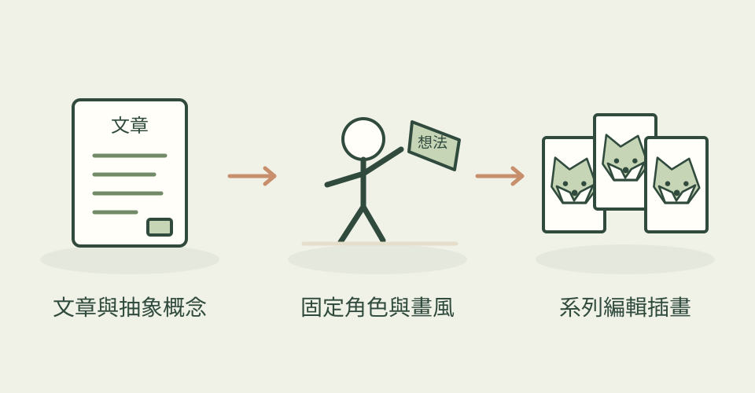

改系統時服務不能停，怎麼畫給讀者看？Illo 作者把它比喻成一邊通車、一邊換橋。預設的墨滴角色 Blot 真的在畫面裡做事，讓概念變成一個能理解的情境。
它怎麼幫忙
先判斷需求是文章配圖、概念插畫、漫畫還是解說圖，再選角色、畫風和構圖。技能提供角色一致性與生成後檢查規則，風格包含孔版印刷、木刻、像素、黏土與粉筆等十七種路線；也能建立自己的角色包，讓系列圖有共同主角。
功能快速理解

把文章中的意思轉成角色正在做的事，用一致主角與畫風完成系列插畫。
功能示意・本站繪製 放大查看可以這樣開口
這是一個可依需求修改的委託範例。
用同一個墨滴吉祥物，畫「收到需求、整理資料、寄送電子報」三張系列插畫。讓主角每張都實際參與工作，保留相同身形、黑色墨線與一個亮色點綴，先交構圖再生成。
適合什麼工作
適合部落格作者、電子報編輯，以及需要吉祥物串起系列圖的內容設計師。作者原作的換橋比喻，也很適合解釋看不見的技術工作。
開始之前
- 準備工具
- 作者腳本需要 Python 3 與網路，主要標示 macOS／Linux。生圖可走作者文件中的 Codex CLI、Grok CLI 或 OpenRouter；其中 Codex CLI 通道明確不支援 Windows／WSL，不能直接承諾本機可用。
- 使用成本
- Skill 是 MIT，但生圖不等於免費。CLI 通道消耗相應帳號訂閱額度；OpenRouter 需要 API key，依模型計費。請先確認帳號可用額度並預留重試成本。
- 交付內容
- 編輯插畫、系列角色配圖、漫畫或概念解說圖
- 先留意
- 2026-10-22 首次收錄，並非當天發布。生成仍可能需要挑圖和重試；精確數據圖表、正式標誌和介面稿不是它的主要用途。本站沒有執行此技能；主圖是原作者展示，Illo by Trevin Chow.
作者與來源
本文依作者公開說明整理，沒有實際執行這個專案。功能插圖由本站繪製，原作者範例另行標示；並非本站執行技能的測試結果。GitHub 星數為專案總量，觀察時間為 2026年10月22日 08:30（台北時間）。
首次收錄，尚無前次收藏量比較。